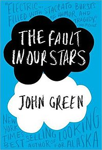

You’ve heard of The Canterbury Tales, a series of twenty-four stories told by a group of pilgrims on their journey to Canterbury.
Boccaccio’s The Decameron predates it by several decades.But Boccaccio’s cast of seven women and three men isn’t on the road—rather, they’ve sequestered themselves in a villa near Florence in hopes of escaping the Black Death. The hundred tales they tell each other during their two-week quarantine span the gamut from witty to tragic.
How We Made Our Coronavirus Quarantine Book List:
As we put together this list, we faced one enormous question:
What makes a good coronavirus quarantine read?
There are a lot of books about pandemics out there. But the Stand is perhaps more panic-inducing than encouraging when you’re trapped at home with the risk of infection outside.
Rather than stark dystopias about devastating outbreaks, we looked instead for books that offer hope, and especially humor.
“Laughter is the best medicine,” said someone somewhere, and while it might not be a coronavirus cure on its own, it can certainly help lift us on some dark and stressful days.
This list spans a variety of genres and themes, from pandemic novels to mental illness memoir to nonfiction science books to cozy mysteries. Whether you’re looking for hope for the shut-in, fascinating facts, or some good old escapism, you’ll find something to love on this list.
The Decameron
Murder on the Orient Express
Just after midnight, a snowdrift stops the Orient Express in its tracks. The luxurious train is surprisingly full for the time of the year, but by the morning it is one passenger fewer.
An American tycoon lies dead in his compartment, stabbed a dozen times, his door locked from the inside. Isolated and with a killer in their midst, detective Hercule Poirot must identify the murderer – in case he or she decides to strike again.
Imagine your train is stuck in a snowdrift overnight with a murderer on board. Agatha Christie's recurring character, Hercule Poirot is a Belgian detective that is traveling to England by train when he finds himself in interesting company.
Little does he know that this train ride will require his skill and cunning to solve an unexplained murder in one of the cabins.
Looking for Alaska
Everybody has a talent. Miles Halter’s is knowing the last words of a lot of different people—people like the author Rabelais, whose enigmatic last words “I go to seek a Great Perhaps” inspire the sixteen year-old to leave his family home in Florida and enroll in Culver Creek, a co-ed boarding school in Alabama.
There he makes a new circle of friends: his roommate Chip, a scholarship student whom everyone calls “The Colonel;” Takumi, a slyly funny Japanese-American rapper; and sweet-spirited, Romanian-born Lara, who has trouble pronouncing the letter “i.”
But most importantly he meets Alaska, a beautiful girl who “had eyes that predisposed you to supporting her every endeavor.” Miles quickly falls in love with this reckless, quirky, endlessly intriguing girl.
An omnivorous reader, Alaska introduces him to a new set of last words — those of South American liberator Simón Bolivar — that pose an intriguing question, “How will I ever get out of this labyrinth?”
It’s a question that takes on a deeper, more poignant resonance when an unthinkable tragedy invites Miles to examine the meanings of life . . . and death.

Harry Potter
It starts with Dumbledore, Professor McGonagall and Rubeus Hagrid leaving a baby boy, with a tuft of jet-black hair and a curiously shaped wound on his brow, on the doorstep of number four, Privet Drive. They might have thought that his aunt and uncle would look after him kindly. But ten years later, Harry Potter sleeps in a cupboard under the stairs, and the Dursleys – Vernon, Petunia and their son Dudley – don’t exactly treat him like one of the family. Especially as it becomes clear quite how different from them he is.
As his eleventh birthday arrives, the time comes for Harry Potter to discover the truth about his magical beginnings – and embark on the enthralling, unmissable adventure that will lead him to Hogwarts School of Witchcraft and Wizardry, his true friends Ron Weasley and Hermione Granger, powerful secrets and a destiny he cannot avoid ...

The Fault In Our Stars
The Fault In Our Stars is a fabulous book about a young teenage girl who has been diagnosed with lung cancer and attends a cancer support group.
Hazel is 16 and is reluctant to go to the support group, but she soon realises that it was a good idea. Hazel meets a young boy named Augustus Waters. He is charming and witty. Augustus has had osteosarcoma, a rare form of bone cancer, but has recently had the all clear.
Hazel and Augustus embark on a roller coaster ride of emotions, including love, sadness and romance, while searching for the author of their favourite book.
They travel to Amsterdam in search of Peter Van Houten the author of An Imperial Affliction. While on their trip Augustus breaks someheartbreaking news to Hazel and both of their worlds fall apart around them.
If you enjoy young adult books, full of witty humour and heartbreaking events, this book is perfect for you. Expect to laugh, cry and smile throughout this masterpiece by the amazing John Green. I highly recommend this book.
The End Of October
I don’t recall ever reading a thriller cover to cover, and that’s a confession, not a boast. I’m excited to think that I’ve found the perfect way into the genre: Lawrence Wright’s The End of October, the book that has everyone calling him prophetic.
It’s about a pandemic, similar to the 1918 flu, that begins in East Asia. As the disease wreaks global havoc, an American epidemiologist heads to Indonesia to investigate and … well, I’ve only dipped in.
Wright is the first to say that his novel might be just what readers don’t want right now—the antithesis of escapist fare. But I can already tell that, in fact, it will offer a kind of relief I yearn for these days:
It’s crammed with expertise, thoroughly absorbed and deployed in a timely way. What else would one expect of Wright, an astonishingly good reporter and researcher who knows how to tell a gripping story?
If only the same were true of many of the politicians in nominal charge of the coronavirus crisis. — Ann Hulbert
The Alchemist
The Alchemist by Paulo Coelho continues to change the lives of its readers forever. With more than two million copies sold around the world, The Alchemist has established itself as a modern classic, universally admired.
Paulo Coelho's masterpiece tells the magical story of Santiago, an Andalusian shepherd boy who yearns to travel in search of a worldly treasure as extravagant as any ever found.
The story of the treasures Santiago finds along the way teaches us, as only a few stories can, about the essential wisdom of listening to our hearts, learning to read the omens strewn along life's path, and, above all, following our dreams.
The Book Thief
It is 1939. Nazi Germany. The country is holding its breath. Death has never been busier, and will be busier still.
By her brother's graveside, Liesel's life is changed when she picks up a single object, partially hidden in the snow. It is The Gravedigger's Handbook, left behind there by accident, and it is her first act of book thievery. So begins a love affair with books and words, as Liesel, with the help of her accordian-playing foster father, learns to read. Soon she is stealing books from Nazi book-burnings, the mayor's wife's library, wherever there are books to be found.
But these are dangerous times. When Liesel's foster family hides a Jew in their basement, Liesel's world is both opened up, and closed down.
In superbly crafted writing that burns with intensity, award-winning author Markus Zusak has given us one of the most enduring stories of our time.
The Maze Runner
Ever had a really rough morning where you wake up in a dingy elevator and can't remember how you got there, or anything else? And then you find yourself in a fight for your life during a dystopian, post-apocalyptic future?
No?
Well, that's what happens to our protagonist Thomas in The Maze Runner, written by James Dashner and published in 2009. it was a Top 10 New York Times National Bestseller for over 14 weeks and it won more Young Adult book awards than you can shake a stick at.It was such a success, in fact, that it is now the first of a five-book series, so if you like it, get excited for four more.
The Maze Runner is perfect for someone who loves to read but doesn't like to be reminded by long words and difficult premises that they're reading. This book will fly through your brain as though your eyeballs have magically discovered a way to project a movie that is directly translated from words on a page. And that's not bad—not bad at all.
Turtles All The Way Down
It all begins with a fugitive billionaire and the promise of a cash reward. Turtles All the Way Down is about lifelong friendship, the intimacy of an unexpected reunion, Star Wars fan fiction, and tuatara. But at its heart is Aza Holmes, a young woman navigating daily existence within the ever-tightening spiral of her own thoughts.
In his long-awaited return, John Green shares Aza's story with shattering, unflinching clarity
Everything Everything
Madeline Whittier is allergic to the outside world. So allergic, in fact, that she has never left the house in all of her seventeen years. She is content enough—until a boy with eyes the color of the Atlantic Ocean moves in next door. Their complicated romance begins over IM and grows through a wunderkammer of vignettes, illustrations, charts, and more.
Everything, Everything is about the thrill and heartbreak that happens when we break out of our shell to do crazy, sometimes death-defying things for love.
The Last Song
Seventeen-year-old Veronica 'Ronnie' Miller’s life was turned upside-down when her parents divorced and her father moved from New York City to Wilmington, North Carolina.
Three years later, she remains angry and alienated from her parents, especially her father . . . until her mother decides it would be in everyone’s best interest if she spent the summer in Wilmington with him. Ronnie’s father, a former concert pianist and teacher, is living a quiet life in the beach town, immersed in creating a work of art that will become the centerpiece of a local church.
The tale that unfolds is an unforgettable story about love in its myriad forms - first love, the love between parents and children - that demonstrates, as only a Nicholas Sparks novel can, the many ways that deeply felt relationships can break our hearts . . . and heal them.

The Kite Runner
Taking us from Afghanistan in the final days of the monarchy to the present, The Kite Runner is the unforgettable, beautifully told story of the friendship between two young boys growing up n Kabul. Rasided in the same household and sharing the same wet nurse, Amir and Hassan nonetheless grow up in different worlds:
Amir is the son of a prominent and wealthy man, while Hassan, the son of Amir’s father’s servent, is a Hazara, member of a shunned ethnic minority.
Their intertwined lives, and their fates, reflect the eventual tragedy of the world around them. When the Soviets invade and Amir and his father flee the country of a new life in California, Amir thinks that he has escaped his past. And yet he cannot leave the memory of Hassan behind him. The Kite Runner is a novel about friendship, betrayal, and the price of loyalty.
It is about the bonds between fathers and sons, and the power of fathers over sons – their love, their sacrifices, and their lies. Written against a backdrop of history that has not been told in fiction before, The Kite Runner describes the rich culture and beauty of a land in the process of being destroyed.
But with the devestation, Khaled Hosseini also gives us hope: through the novel’s faith in power of reading and storytelling, and in the possibilities he shows for redemption.
Days Of Distraction
A wry, tender portrait of a young woman—finally free to decide her own path, but unsure if she knows herself well enough to choose wisely—from a captivating new literary voice
The plan is to leave. As for how, when, to where, and even why—she doesn’t know yet. So begins a journey for the twenty-four-year-old narrator of Days of Distraction. As a staff writer at a prestigious tech publication, she reports on the achievements of smug Silicon Valley billionaires and start-up bros while her own request for a raise gets bumped from manager to manager. And when her longtime boyfriend, J, decides to move to a quiet upstate New York town for grad school, she sees an excuse to cut and run.
Moving is supposed to be a grand gesture of her commitment to J and a way to reshape her sense of self. But in the process, she finds herself facing misgivings about her role in an interracial relationship. Captivated by the stories of her ancestors and other Asian Americans in history, she must confront a question at the core of her identity: What does it mean to exist in a society that does not notice or understand you?
Equal parts tender and humorous, and told in spare but powerful prose, Days of Distraction is an offbeat coming-of-adulthood tale, a touching family story, and a razor-sharp appraisal of our times.